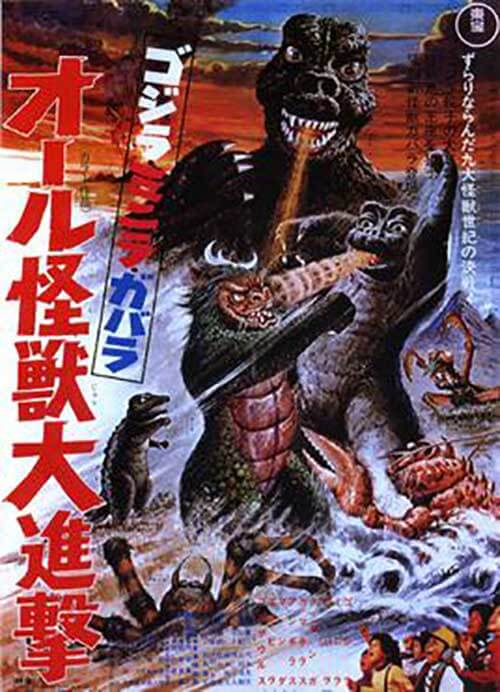

En su libro "Sobre la muerte y el morir" presentó este modelo general de cinco etapas de duelo que explican cómo se sienten las personas en distintos momentos de su luto y cómo tienden a actuar.
El nombre de Godzilla es una transliteración de Gojira (ゴジラ), una combinación de dos palabras japonesas: gorira (ゴリラ), que significa "gorila", y kujira (鯨 o クジラ), que significa "ballena".
Su diseño se inspiró en tres dinosaurios prehistóricos
Desplazarse de izquierda a derecha para comprobar la comparación
El Origen
Godzilla fue creado en 1954 por Tomoyuki Tanaka para ilustrar el terror que sintieron los japoneses después de los bombardeos atómicos de Hiroshima y Nagasaki. El cineasta quiso simbolizar la venganza de la naturaleza
El primer Godzilla fue un actor con un traje de Godzilla. Sin embargo, debido a la escasez de productos básicos como el caucho después de la Segunda Guerra Mundial, el disfraz original de Godzilla de 1954 se creó a partir de hormigón premezclado.
Film History
Godzilla
Toho Co.
Godzilla Raids Again
Toho Co.
Godzilla, King of the Monsters
Toho Co., Jewell Enterprises

King Kong vs Godzilla
Toho Co.
Mothra vs Godzilla
Toho Co.
Ghidorah, the Three-Headed Monster
Toho Co.
Invasion of Astro-Monster
Toho Co.
Ebirah, Horror of the Deep
Toho Co.
Son of Godzilla
Toho Co.
Destroy All Monsters
Toho Co.
All Monsters Attack
Toho Co.
Godzilla vs Hedorah
Toho Co.
Godzilla vs Gigan
Toho Co.
Godzilla vs Megalon
Toho Co.
Godzilla vs Mechagodzilla
Toho Co.

Terror of Mechagodzilla
Toho
The Return of Godzilla
Toho Co.
Godzilla 1985
New World Pictures, Toho Co.
Godzilla vs Biollante
Toho Co.
Godzilla vs King Ghidorah
Toho Co.
Godzilla vs Mothra
Toho Co.

Godzilla vs Mechagodzilla II
Toho Co.

Godzilla vs SpaceGodzilla
Toho Co.

Godzilla vs Destoroyah
Toho Co.

Godzilla
Centropolis Entertainment, Fried Films, Independent Pictures

Godzilla 2000: Millennium
Toho Co.

Godzilla vs Megaguirus
Toho Co.

Godzilla, Mothra and King Ghidorah:
Giant Monsters All-Out Attack
Toho Co.

Godzilla Against Mechagodzilla
Toho Co.

Godzilla: Tokyo S.O.S.
Toho Co.

Godzilla: Final Wars
Toho Co., CP International, Zazou Productions, Napalm Films

Godzilla
Legendary Pictures

Shin Godzilla
Toho Co., Cine Bazar


Godzilla: City on the Edge of Battle
Polygon Pictures, Toho Animation

Godzilla: The Planet Eater
Polygon Pictures, Toho Animation

Godzilla: King of the Monsters
Legendary Pictures

Tomemos una gráfica mixta de la infografía Why your smartphone is causing you ‘text neck’ syndrome. Con "ingeniería inversa" podemos aprender cómo resolver algo como lo que sigue:
¿Notaron cómo voy a buscar dos documentos SVG? Gracias a unas clases de Boostrap, hay uno que no se muestra antes de la pantalla mediana (problema-grande.svg) y hay otro que deja de mostrare en la pantalla mediana (problema-chico.svg).
Intenten otro ejercicio de "ingeniería inversa": Con la gráfica no figurativa bajo el subtítulo de Overview de Cities driving the world.